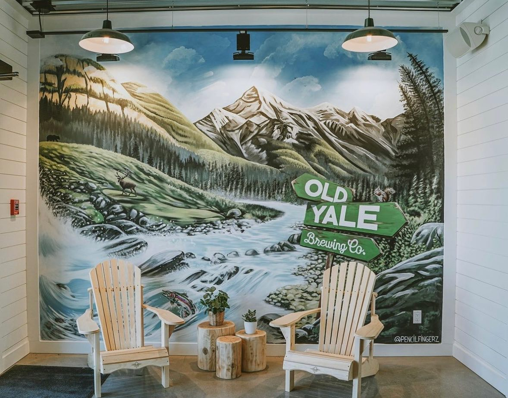
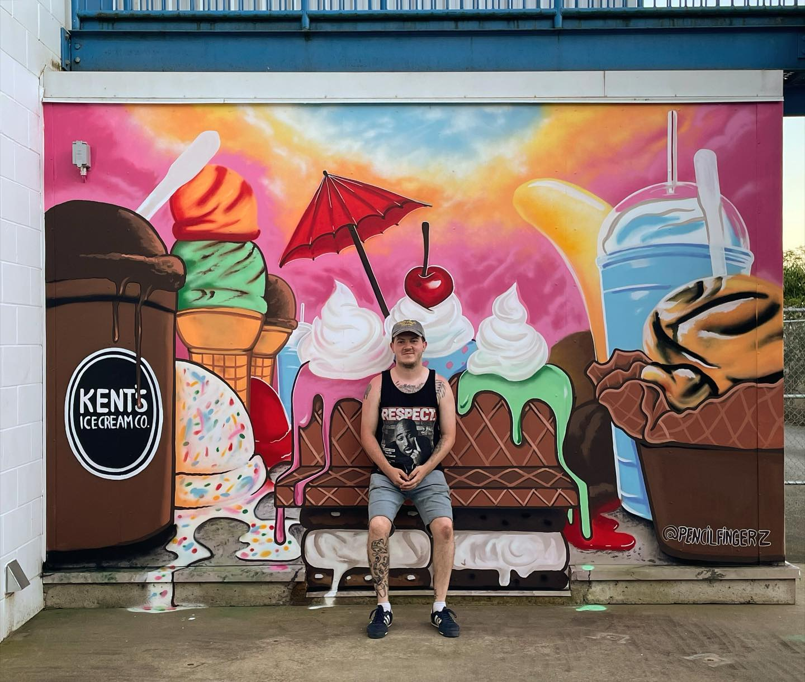
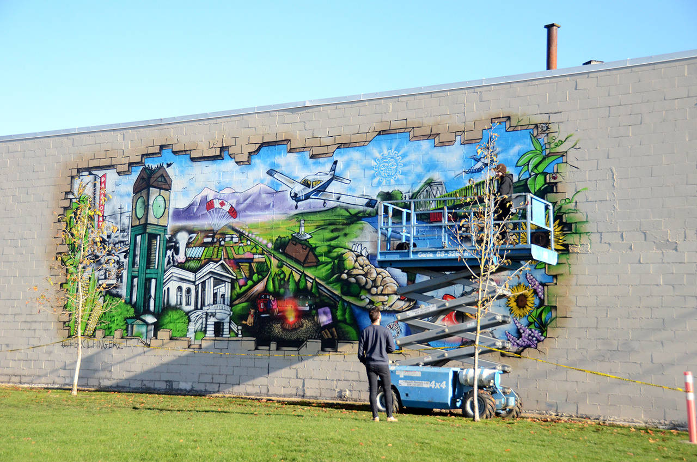
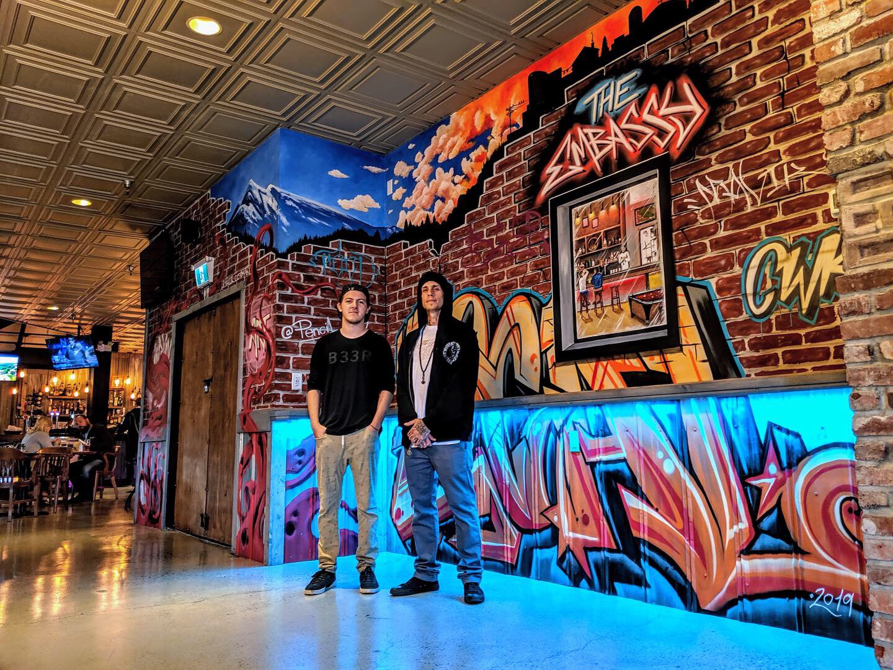
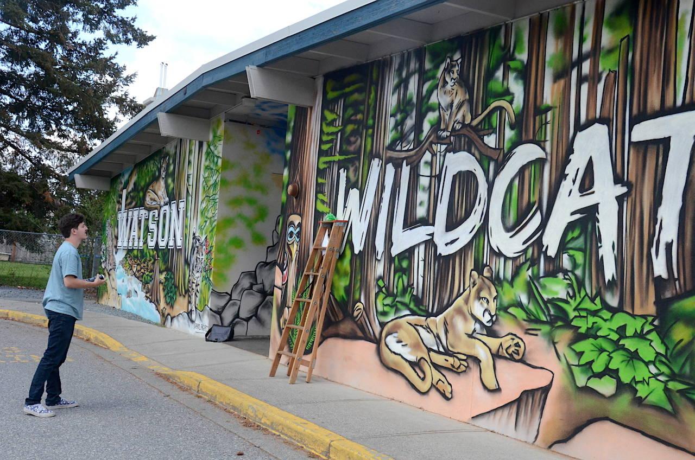
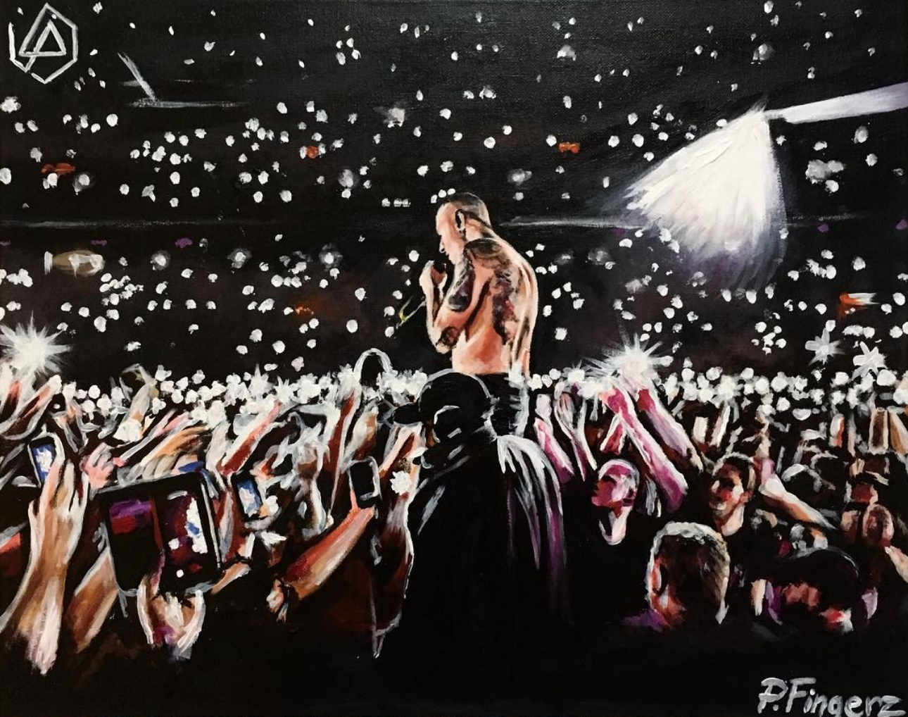
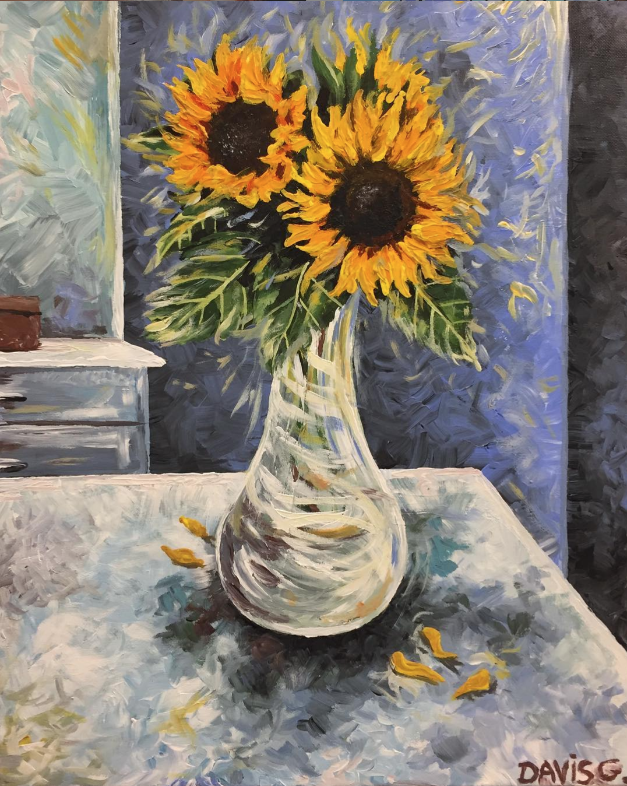
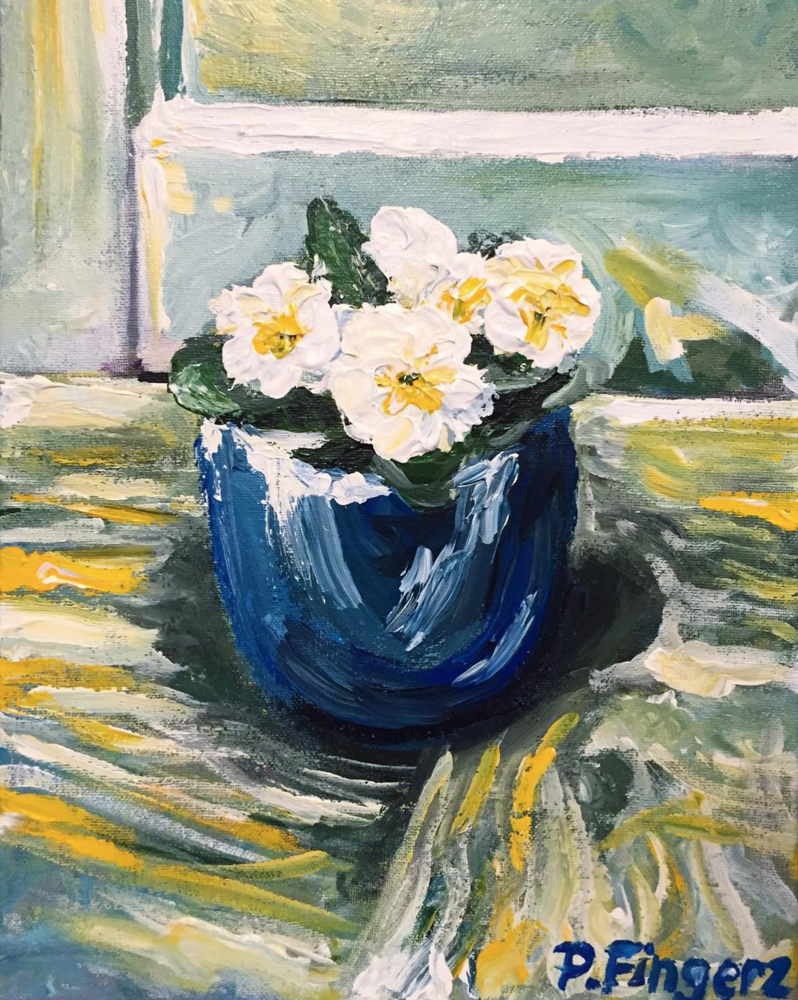

Murals & Paintings
Murals and paintings that turn a wall into a landmark.
Pencil Fingerz is a Chilliwack, B.C.–based artist specializing in large-scale, hand-painted murals and original paintings for breweries, retailers, municipalities, schools, and hospitality brands across British Columbia.
Email Pencil Fingerz
Selected Clients
- Old Yale Brewing Co.
- Kent’s Ice Cream Co.
- City of Chilliwack
- The Embassy
- Watson Elementary
About the Work
Every Pencil Fingerz piece starts with a conversation, not a prompt. I’m a multidisciplinary artist based in Chilliwack, B.C., specializing in large-scale murals and original paintings for businesses, municipalities, and institutions that want art no one else can copy and paste.
Alongside murals and paintings, I also work in tattooing, logo design, and hand-painted clothing, but walls and canvas are where the biggest, most ambitious projects happen. Every piece is 100% hand-made from first sketch to final coat. No AI tools, no templates, no shortcuts.
A hand-painted mural is a landmark, not a logo. It gives people a reason to stop, take a photo, and remember your space, and it tells them your brand invests in quality that can’t be mass-produced.
Selected Projects







How a Commission Works
-
01
Consultation
We talk through your space, goals, budget, and timeline.
-
02
Concept & Approval
You get a custom concept and sign off before a single stroke goes on the wall.
-
03
Execution
Full hand-painted execution on site or in studio, with progress updates along the way.
-
04
Reveal
A finished piece built to last, ready for your opening, campaign, or ribbon-cutting.
Why Pencil Fingerz
100% Hand-Made
Every piece is painted by hand, start to finish. No AI, no vinyl, no shortcuts, just work no one else can replicate.
Built for Attention
A mural is a landmark. It gets photographed, tagged, and remembered long after a sign fades into the background.
Proven at Scale
From storefronts to civic landmarks to school exteriors: large-format work for brands, businesses, and municipalities across B.C.
One Point of Contact
From first sketch to final coat, you work directly with the artist. No account managers, no subcontracted crews.